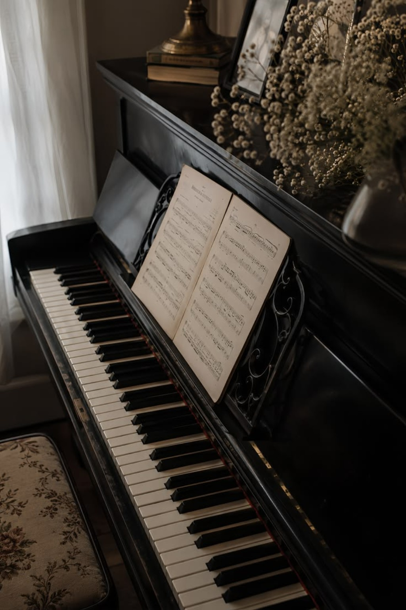
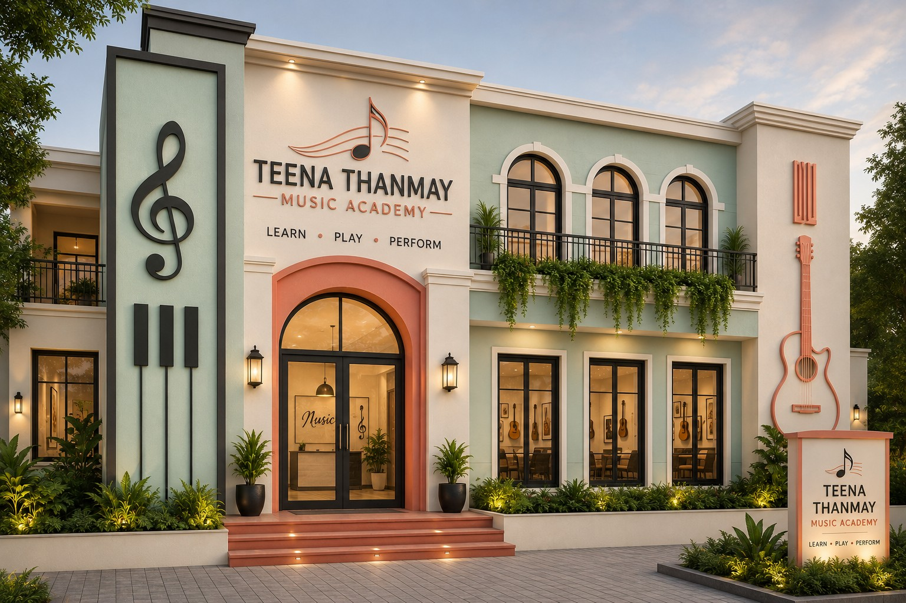
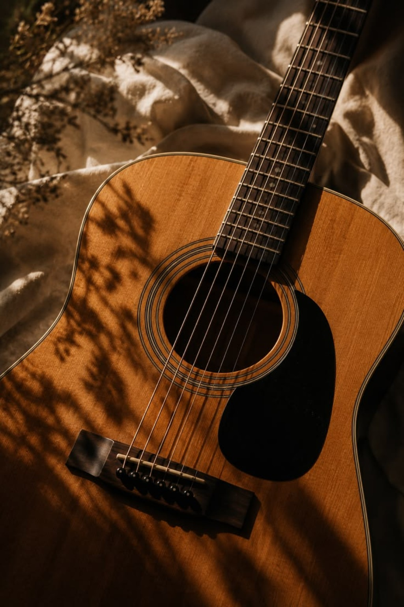

Piano Studio
Focused practice and one-to-one guidance.
Teena Thanmay Music Academy is imagined as a warm, elegant learning space where students can learn, practise and perform with confidence.
“Learn • Play • Perform”

Our approach brings together Indian classical music and contemporary instruments in a calm, aesthetically designed environment. Students can explore their interests while developing rhythm, technique, listening and performance skills.

From the entrance to the lesson room, music is part of the atmosphere.

Focused practice and one-to-one guidance.

Explore strings, wind and percussion instruments.

Build expression, confidence and stage presence.